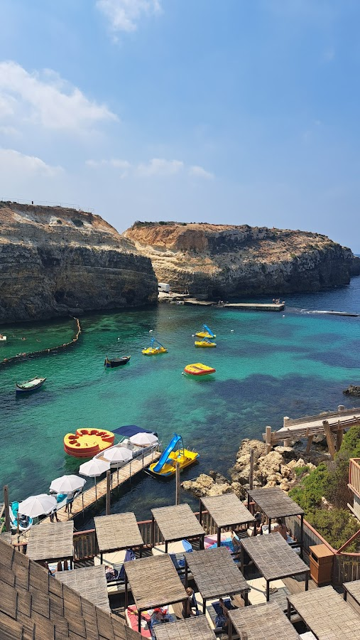

Malta is a place worth visiting all year round, with good weather even in the cold months - compared to other European cities which are freezing in the winter, here you can still find temperatures above zero even in the colder months. But since we were - again - limited by school vacations, we decided to visit in the summer, so for us the focus was on the beaches. And believe me, there are enough beaches to keep you busy for the whole summer.
Unfortunately we didn’t”t have the whole summer, but about ten days to explore the island. We decided to take it slow and concentrate on the north shore - best for beaches and we heard also best for families. The temperatures during the day were sometimes close to 40 degrees so, since travelling with a child, we based our activities on being close to the water. The good news is that here you have plenty of ways to escape the heat as you will see below.
 Our first view upon arriving in Malta
Our first view upon arriving in Malta
We arrived early and took an Uber to our Airbnb in the north of Malta, the ride took about 30 minutes and cost about 30 euros which was totally worth it. We were very tired having travelled in the middle of the night but excited to explore. So after a quick nap we headed to Għajn Tuffieħa. We took an Uber again - too hot for the bus - and as soon as we got off I was impressed by the view. The beach is at the bottom of a steep cliff and there is a nice photo spot with swings on the top. Going down the stairs you easily get to the golden sand and the blue sea… We spent many hours here, there were some waves but our son likes it and I found he beach child friendly (but not indicated for very small kids maybe, also not very accessible if you come with a stroller). There are also not many spots on the shade so either bring or rent an umbrella.
We bought our own umbrella on the first day and used it during the whole trip - I think it was a better deal than renting, specially because there seemed to be some stress going on among the people who rented them, I actually saw them fighting once and screaming a at each other a few times at other beaches… There are places to buy your own umbrella as well as other “last-minute-beach-appliances” right next to the paring lot / bus stop. There was also a stand selling Colombian food (the empanadas were great) and the bar Singita is right next to the beach and famous as a sunset hot spot.
 Feeling welcomed
Feeling welcomed
This is a place that you will not find under Top 10 List of things to do in Malta but we were staying so close to it that we had to check it out: the Xemxija Hill Heritage Walk. We chose the sunset time because it was the only bearable time to take the walk in the hills - temperatures were cooling down getting to 23, 25 degrees at night. Fun fact: I was surprised that we were not attacked by mosquitoes even though I forgot to bring repellent. So, the heritage walk of Xemxija offers beautiful views of the bay and the city as you walk through ancient sites and ruins. It is free to enter but not really well maintained, it is only worth if you are around the area like we were.
A neglected but still beautiful path in the North of MaltaMalta’s sister island Gozo, is just a short ferry ride away and definitely worth a visit. There are many tourism agencies offering tours for all day but we decided to take a bus to the ferry terminal and cross with the ferry since we were not far from Cirkewwa Ferry Terminal. The ferry is quite huge and offers a privileged view of the island when arriving, you just have to go outside. It was highest season but not too crowded and we could enjoy the wind and the views from the deck - without paying for a tour and free to move around at our own pace. There are for sure many things to see in Goo and I could imagine spending a whole vacation there, exploring the island, but we only had one day so we chose Rambla Bay.
Arriving in Gozo, view from the FerryThis beach has an incredible golden sand with very clear waters. It is rocky and wavy as it is on open sea and it gets windy. If you have a bigger kid who likes the waves like mine - he actually finds the flat sea boring - then I recommend. And if you are travelling without kids or with teens there is also a longer path you can take to a beautiful cave which offers amazing views from the top. We missed this one though cause we just wanted to relax at the beach.
We also had lunch at one of the few restaurants which are right next to the beach, I only saw two but I guess you can’t go wrong here as both seemed to have a similar menu with mostly meat and seafood options, there is also salad and dessert of course. Nothing super special so I didn’t mark the name of the restaurant, but it was simple, good food with a great beach view and fresh sea breeze. There are also some showers next to the restaurants and a wooden path that leads to the beach. There are some banks outside with shade from the trees which are quite nice for a pic Nic if you are lucky to get a spot.
 Rambla Bay in Gozo, less crowded and simply beautiful
Rambla Bay in Gozo, less crowded and simply beautiful
Of all the beaches we went this was the less crowded and the one that looked more “wild” or less “touristic”, but that was a personal feeling. I was not disappointed and would recommend that, if like me, you only have one day in Gozo you choose Rambla Bay as the beach-to-go.
If there is one thing you can’t miss when visiting Malta, specially in warm months, it is a boat trip to the Blue Lagoon. This time we booked online a full day excursion to just relax and enjoy: it was a day to never be forgotten.
The day started early as we had to be on time at the meeting point, directly by the boat on St Paul’s Bay. We chose a smaller boat from a Maltese family, but there are all types of boats including bigger ones with slides or more with a party vibe. We enjoyed the more chilled and relax vibe on our little boat - we just sat and relaxed enjoying the views while the guide explained a bit about the history of Malta and explained how the tour would be.
 On the way to the Blue Lagoon, Comino Island
On the way to the Blue Lagoon, Comino Island
The first stop was directly at the lagoon where we chose to spend almost all day - some people preferred to go to Gozo from there, therefore staying only one hour at the lagoon, but we like to take things slow… The first impression is that the name really makes sense. The water is blue the whole way but when you get there it changes to a type of blue that I had never seen with bare eyes. So clear and bright it almost shines, it’s like a dream.
 Couldn't resist having one of this drinks... It cost 10 Euros and for 5 you could get a refil
Couldn't resist having one of this drinks... It cost 10 Euros and for 5 you could get a refil
As we got off the boat the place was packed with people - which was expected - so we walked along the crowds to find something to eat and drink. There is a line of stands on top of the rock that circles the lagoon and in summer they are all full, but still we managed to get some food and I ordered a delicious and beautiful Pina colada - inside a real pineapple - which I bought was just the perfect drink for the moment (and looked great on pictures too).
But then it comes the best part: almost everyone is sitting or walking around the food and drink stands, but, if you walk a bit further on top of steep the hill (watch out: this is not for people with mobility issues) you can easily find a quiet space to enjoy the view. We found a cozy spot and took all that beauty in. Then we walked down - carefully, it is a steep rock - and then just through the rocks (there are some small stairs to get in and out of the water too) we just jumped into the water with our snorkels and the inflatable boat for my son.
The water here is deep, clean, almost transparent. We swam the whole way to the other side - it is narrow but deep, so only try this if you really can swim - and then we got to the other side of the lagoon. There was a tiny sand beach and a cave which we decided to cross swimming as well. My son at this point could swim well and there was lots of people doing the same so we realised It was safe. There are tons of beautiful fishes to see so we crossed the whole cave snorkelling and sometimes stopping gripping at the rock on the sides since the whole way is also very deep. The cave ends on open sea so we just took a look out and swam all the way back to the beach. It was not too long but a bit adventurous!
 Perfect spot for snorkeling, even with kids (no shallow water though)
Perfect spot for snorkeling, even with kids (no shallow water though)
Then we relaxed a while at the sand bank and pulled our son who sat on the small "boat" as we swamm all the way back to where we left our bags - on top of the rocks. We didn’t worry about leaving our stuff there since we didn’t bring valuables and it seemed quite safe since everyone were tourists joining from their own boat trips. But again, that’s up to you to decide. I believe most people only stay on one side of the rock and not necessarily swim all the way to the other side. In the middle of the lagoon the boats cannot enter so it is not like you can get a boat there. Some people brought swim fins which I thought was a clever idea.
The boat picked us up on the agreed time and there was one more stop for swimming and snorkelling in Comino on the way back. We finished the day feeling tired but so happy — specially if you do not mind some crowds and are not afraid of taking a swim at the sea or get sea-sick easily, I definitely recommend taking this day trip.
Since we were travelling with a six-year-old we could not miss a day at the Popeye Park, which is also located in the north of the island, and was only a convenient 10-minute drive from our Airbnb. This is a mix of theme park with museum and water park (in the summer) which was actually the film set of the Popeye Movie in the 80’s. Although my son was not even born when Popeye was on TV, we showed him some videos on Youtube before coming here so he was very curious about the place.
It is a quite different experience from anything / anywhere I’ve ever been. The park is open from 9h30 to 5pm in the winter months and even longer in the summer. We came in the morning and stayed until it closed. The biggest attraction for our kid was the water park they built in the sea on the lower part of the park - there were some inflatable toys built into a parkour into the water and he had a LOT of fun with that. But there are also great views of the cliffs, theatre shows throughout the day with actors dressed as movie characters, there are some sunbeams you can use which are included in the price but it is hard to find a free one. There is also a small museum where they show the original Popeye film and lots of objects from the movie. There are some games to play spread around the park and a Minigolf as well. The food is expensive and not special but you can bring your own if you wish. All in all a great experience for families with kids or simply people who are Popeye Fans.
 The park has some great views of the cliffs and fun for all ages, specially in the summer with the water toysI heard from so many people that we should not miss Mdina that I decided to include this on our itinerary, which was not the initial plan. But after 3 people told me I really had to go, I researched a bit and found out Mdina used to be the capital of Malta in ancient times. Malta has such a long, interesting history - some temples are older than the pyramids of Egypt - and because of its strategic position in the middle of the mediterranean it has been invaded so many times by different countries, it has also been under the control of Britain until recently (1964) which explains why everyone speaks English - although Maltese is the other official language. And Mdina is a fortified city, which served as capital from antiquity to the medieval period. Now it still exists among its high walls and has a population of about 250 people. It is often called “the silent city”, probably because after tourist masses leave the city in the afternoon there is only silence left. Even during the day the place has a magical, “silent” air that makes it captivating and indeed - impossible to miss.
At the gates of the Silent CitySo we took the bus, faced a long drive of almost one hour and finally reached its gates. Parents alert: there is a nice playground right in front of the city entrance where kids can play before or after the visit to spend that extra energy. The only thing to do in Mdina is to walk and if you like, take pictures. There are some small shops that sell souvenirs, small restaurants, a church and no cars, only carriages - yes, with actual horses. There is also a spot with a nice view, some cannons that remind of the past marked by many wars and invasions and the most beautiful facades (some more preserved, other less). I was fascinated by the doors of the houses and stopped to observe most of them even if it sounds silly. Of course you can take pictures, just remember to be respectful as actual people live here ;)
Our son also got excited about taking pictures of houses and their doorsWe still spent more days going to the beach, snorkeling, swimming, just laying in the sun or playing at Golden Bay - the nicest sand beach for families. We didn't have enough time though for many other cool things, like: seeing the capital Valetta, going to the South and exploring the fish village of Marsaxlokk, the Blue Grotto (which is not the same of the blue lagoon and actually quite far away from it) but also very beautiful.
Because of time, the heat and because we were travelling with a kid, we decided to stick to the region of the North since we were staying in Meliha. On our last night we walked up the hill to the Church at night, which was all illuminated in beautiful colours and had a pizza with an excellent view to the sea and the whole bay next to a playground where kids were playing outside until late at night. We were able to have a feeling of the “local life” as we walked on the streets around the church and everything was so lively, with music everywhere, many coming from the restaurants who hire musicians to play outside in the summer.
A narrow street in the town of MdinaDepending on the time of the year and the type of trip you take there is so much more to see besides the nature an beaches, some I mentioned above, other include a visit to the Aquarium, Temples in Gozo, the Catacombs in Rabat, and to the capital, Valetta, you can plan an entire City Trip and not get bored - I would do that in colder months though, maybe early spring or autumn to avoid the heat.
More than 80% of the population identify as catholics. Churches are everywhere. This one, in Melieha, was beautiful illuminated at night.There are many options of where to stay in Malta, going from basic B&Bs to 5-star-hotels or entire Fincas in the interior of the Island for those looking for a more authentic experience. We rented this great, pretty apartment with a very nice host in the Northwest Coast because the focus of our trip was the beaches. But you can find options all over the island and for all budgets, I recommend to check on Platforms like Booking and Airbnb to choose what suits you and your travelling style.
Public transport works fine in Malta. Contrary to this other Island we went the summer before (you can read about it here) here we did not feel the need to rent a car. The streets are very steep (the island is full of hills) and Maltese drive on the left (like in London) and have a very “crazy” driving style - compared to Germany at least. So with the car you get flexibility but it might also get a bit stressful. The bus system on the other hand works very well with buses coming and going day and night and taking you almost everywhere. In the high season it is true that sometimes they are so full that they do not stop - and then you have to wait another 30 minutes in the heat. But we still used the bus many times and never had any issue.
If you choose to use the bus the whole time you might consider purchasing a Talinja Card
Using the bus in Malta is easy, safe and unexpensive - air conditioning included.